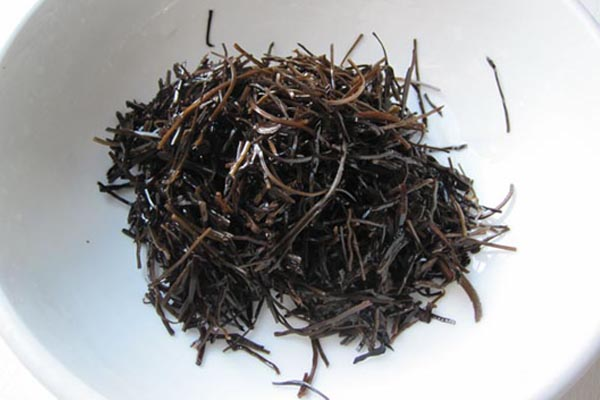
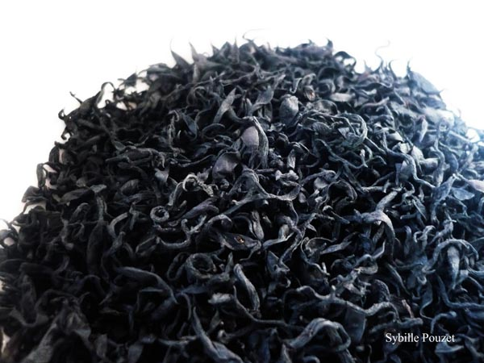
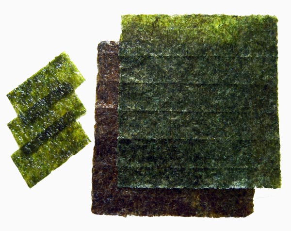
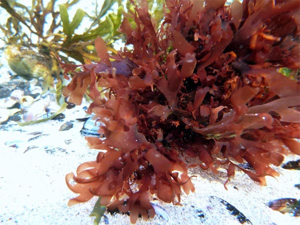
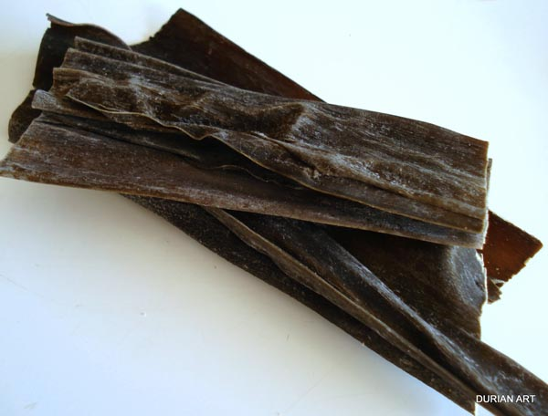
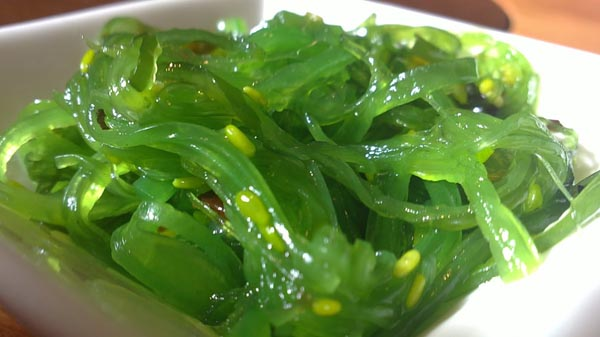

أرامي ARAME: عشبة بحرية سوداء اللون ذات خيوط سوداء رفيعة، تجفف وتقطع بعد استخراجها من البحر وتتميز بطعمها الخفيف. يكثر وجودها على سواحل آسيا وجنوب أميركا، وهي غنيه بالحديد والكالسيوم مقارنه بالأعشاب الأخرى ومفيده للأسنان والعظام وتنظيم الدورة الدموية.
هيجيكي HIJIKI: عشبة بحرية بنية اللون يتحول لونها إلى الأسود عند طهوها، تنمو في بحار شرق آسيا وفي شمال المحيط الأطلسي على عمق ثلاثين متراً وتجنى في فصل الربيع لتجفف .تتميز بنكهة ورائحة ثمار البحر القويه وتحتوي على أعلى معدل من الكالسيوم والحديد المركزين وتعتبر مصدراً هاماً للمعادن والعناصر النادرة بالإضافة إلى الفيتامين A-C-B12.
نوري NORI:عشبة بحرية يتحول لونها الى الاخضر الفاتح عند تحميصها وتعد اليابان البلد الاول في انتاجها وهي غنية بالعناصر الغذائية بما فيها البروتيين والكالسيوم والحديد والفيتامينِ A-C وهي مفيده للكلتين ووظائف الجهاز البولي والاعضاء التناسليه وتساعد على خفض الكولسترول وتحسين الدوره الدمويه. وتنافس النوري الجزر في احتوائها على فيتامين A وبها ضعفا قدر البروتين الموجود في بعض اللحوم.
دولسي DULSE : عشبة بحرية حمراء مائلة الى اللون الارجواني تنمو في المياه الباردة نسبيا خاصة في المحيطين الاطلسي والهادئ وقد عرفت منذ مئات السنين في شمال اميركا واوروبا. تفيد الدوره الدموية وتنشط الخلايا على استيعاب البروتيين. يوجد في الدولسي بوتاسيوم ضعف الموز 30 مرة و يفوق جذور البنجر 200 مرة من حيث احتوائه على الحديد.
كمومبو KOMBU: عشبة بحرية سميكة ذات حجم كبير، أصبحت موضوعاً لأبحاث طبية واسعة الانتشار نظراً لأهميتها، وتتمتع هذه العشبة بقدرتها على تقوية الدم وإزالة الفضلات السامة من الجسم بسبب حمض الألجينيك الموجود بها، وتساعد على تقليل الأورام عند استخدامها كطعام أو كمادة مرهمية.
وكامي WAKAME: عشبة بحرية يتم جمعها من سواحل اليابان والصين وكوريا، وتتحول إلى اللون الأخضر الجميل نصف شفاف عند طهوها أو نقعها في الماء الدافي وتحتوي على نسبة عالية من الكالسيوم والحديد والفيتامين B-A واليود ولها قدرة على تحويل المعادن السامة داخل الأمعاء إلى مركبات غير سامة يسهل خروجها مع الفضلات. إعداد: زينة جمّال الصور منقولة عن الإنترنت.. المصادر الحقيقية مجهولة